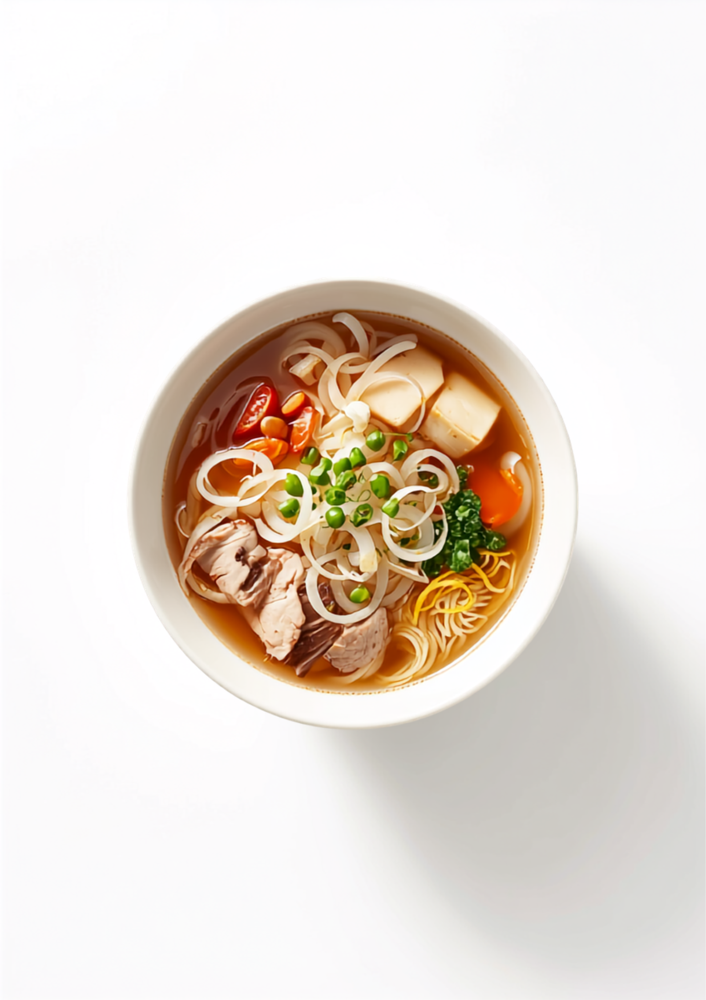

自家製生麺に、シャキシャキの玉ねぎを一面に。
いろんなものを、
混ぜ合わせる。
それが、ちゃんぽん。
王道のちゃんぽんはもちろん、自家製生麺にいろんな材料を「混ぜ合わせて」、全く新しいちゃんぽんを。玉ねぎのシャキシャキは、どの一杯にも共通する、この店の合図です。
4月からは、冷たいちゃんぽん・冷たい辛味噌ちゃんぽんなど、季節のメニューも。次に行くのが、楽しみになる店です。
よくある麺ではなく、少し太い自家製の生麺。ツルッとした喉越しと、噛みごたえ。
上にのる玉ねぎスライスが、良いアクセント。店名にもなった、この店の顔。
自席で精算、食後にはコーヒーのサービスも。至れり尽くせりの、やさしい所作。
立ち居振る舞い、受け応えがとても美しい奥さん。そして、ご主人の相変わらずの無骨さ。また、この所作を見にお邪魔したいと思わせてくれる、そんなお店です。